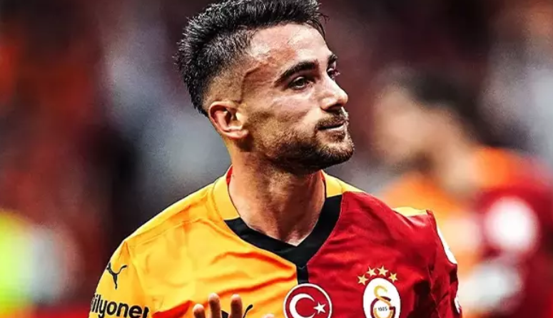

Beşiktaş'ta sahne sırası gençlere geldi! Solskjaer kadroyu değiştiriyor
Ziraat Türkiye Kupası’na veda ettikten sonra Trendyol Süper Lig’i üçüncü sırada bitirmeye odaklanan ancak son 5 maçta 11 puan kaybeden Beşiktaş’ta Ciro Immobile’nin formsuzluğu ve Ernest Muçi’nin sakatlığı yüzünden gözler genç yıldızlara çevrildi.
Beşiktaş'ta Ciro Immobile’nin formsuzluğu ve Ernest Muçi’nin sakatlığı sonrasında teknik direktör Ole Gunnar Solskjaer, Göztepe maçında kadroda gençlik aşısı yapacak.
Teknik Direktör Ole Gunnar Solskjaer’in ligde kalan 7 maçta Mustafa Hekimoğlu ve Semih Kılıçsoy’a düzenli forma şansı vermenin hesaplarını yaptığı bildirildi. Solskjaer, Başakşehir maçında ilk 11’de sahaya sürdüğü 17 yaşındaki Mustafa Hekimoğlu’nun performansından memnun kaldı. Mustafa golle buluşamasa da enerjisi ve mücadeleci futboluyla Norveçli hocanın gözüne girmeyi başardı.
Thomas Reis'ten Galatasaray sözleri
Samsunspor Teknik Direktörü Thomas Reis, Antalyaspor yenilgisi sonrası konuştu. Reis, "Bugün gösterdiğimiz performanstan ve mağlubiyetten dolayı çok mutsuzum. Galatasaray ile zor bir maç bizi bekliyor." dedi.
Trendyol Süper Lig'in 30. haftasında Antalyaspor'a deplasmanda 2-1 mağlup olan Samsunspor'da teknik direktör Thomas Reis, mağlubiyetten dolayı üzgün olduklarını söyledi.
Thomas Reis, "Bugün gösterdiğimiz performanstan ve mağlubiyetten dolayı çok mutsuzum. Geçen haftandan çok daha iyi performans göstermek istemiştik. Zor bir karşılaşmaydı, eksiklerimiz vardı. Erken dakikalarda Bennasser'ın beklemediğimiz bir sakatlığı oldu. İkinci yarıya çok daha iyi başladık, fırsatlar yakaladık. Frikikten golü bulduk. Kendi hatamızdan yediğimiz golle kaybettik. Gelecek hafta Galatasaray ile zor bir maç bizi bekliyor. Nasıl bir performans göstereceğimize bakacağız." değerlendirmesinde bulundu.
TRANSFER HABERİ | Fenerbahçe'de Jose Mourinho son sözü söyledi! Cenk Tosun..
Fenerbahçe'nin yaz transfer döneminde kadrosuna kattığı ve takımda Edin Dzeko ve Youssef En-Nesyri'nin arkasında 3. forvet olan Cenk Tosun, sezon boyunca yedek kulübesinde kaldı. Cenk, sarı-lacivertli formayla 2'si ilk 11 olmak üzere 17 maçta süre aldı ve 2 gol kaydetti.
Teknik Direktör Jose Mourinho'nun her seferinde çalışkanlığı ve profesyonelliği ile övdüğü deneyimli oyuncu, kariyerini Japonya'da sürdürme kararı sonrası teknik heyet ve yönetimden izin alırken, bu transferi gerçekleşmedi. Mourinho, son yaşanan sakatlıkların ardından ligin kalan bölümünde Cenk'ten daha fazla yararlanmak için kadroda tutma kararı aldı.
Polonya grupta 2'de 2 yaptı
Dünya Kupası Avrupa Elemeleri ikinci grup maçında Polonya, Malta'yı 2-0 yendi.
Dünya Kupası Avrupa Elemeleri G Grubu ikinci maçında Polonya, Malta'yı konuk etti.
Polonya, Swiderski'nin 27 ve 51. dakikalarda attığı gollerle maçı 2-0 kazandı.
Polonya grupta 2'de 2 yaptı ve puanını 6 yaptı. Malta iki maçtan da puan alamadı.
Maça ilk 11'de başlayan Frankowski, 66. dakikada yerini Cash'e bıraktı. Sebastian Szymanski ise 90 dakika sahada yer aldı. süper ligden 4 isim !
Süper Lig'de forma giyen Sebastian Szymanski, Przemyslaw Frankowski, Krzysztof Piatek ve Kamil Piatkowski maça ilk 11'de başladı.
Piatek ve Frankowski 66 dakika sahada kalırken Szymanski ve Piatkowski 90 dakika forma giydi.
Krzysztof Piatek, Swiderski'nin attığı ilk golün asistini yaptı.
TFF Başkan Vekili Ceyhun Kazancı istifa etti
Türkiye Futbol Federasyonu (TFF) Başkan Vekili Ceyhun Kazancı, görevinden istifa ettiğini duyurdu.
Kazancı, yaptığı yazılı açıklamada şu ifadelere yer verdi:
"18 Temmuz 2024 tarihinde Türkiye Futbol Federasyonu Başkan Vekili, İcra Kurulu Üyesi, Milli Takımlar, FIFA ve UEFA İlişkilerinden Sorumlu Yönetim Kurulu Üyesi olarak başladığım görevimden, gördüğüm lüzum üzerine istifa etmiş bulunuyorum. Bu ayrılığın iki tarafa ve Türk futboluna hayırlı olmasını diliyorum. Görevim süresince yanımda olan, destek veren herkese sonsuz teşekkür ediyorum." TRT Spor'un haberine göre Galatasaray-Fenerbahçe maçında Slavko Vincic’in düdük çalmasının ardından Beşiktaş cephesi, derbilere yabancı hakem atanmasını istemişti. TFF Başkan Vekili Ceyhun Kazancı, Beşiktaş-Galatasaray derbisine yabancı hakem verilmemesi nedeniyle istifa kararı aldı.
Kerem Aktürkoğlu Benfica'da olay oldu! Performansıyla Portekiz'e damga vurdu
Türkiye'den yüksek bonservisle yurt dışına transfer olan futbolculardan bazıları bu sezon takımlarının başarısında önemli rol oynarken, bazıları ise yeterli forma şansı bulamadı. Benfica'ya transfer olan Kerem Aktürkoğlu, gösterdiği performansla Portekiz'e damga vurdu!
Yeni takımına hızlı adapte olan Kerem, Benfica formasıyla şu ana kadar 46 resmi maçta görev aldı. Bu karşılaşmalarda 16 gol atan ve 14 asist yapan başarılı oyuncu, toplamda 3186 dakika sahada kalarak hücum hattının en önemli parçalarından biri oldu.Kerem, Benfica’da bir diğer milli oyuncu Orkun Kökçü ile birlikte forma giyiyor. İki Türk futbolcu, takımlarının başarısında önemli rol oynarken, Portekiz futbol kamuoyunun da takdirini kazandı.
Beşiktaş-Galatasaray derbi maçı için heyecanlı bekleyiş sona erdi.
Beşiktaş-Galatasaray derbi maçı için heyecanlı bekleyiş sona erdi. Süper Lig'de bu sezon beklentilerin çok uzağında bir performans sergileyen Beşiktaş, lider Galatasaray'ı konuk etti. Lig'de son iki hafta aldığı mağlubiyetler ile taraftarını üzen Siyah Beyazlı takım, Galatasaray karşısında kazanarak önemli bir galibiyet elde etmek ve taraftarını mutlu etmek istedi. Peki Beşiktaş-Galatasaray derbi maçı kaç kaç bitti?
Beşiktaş-Galatasaray derbi maçı 29 Mart Cumartesi saat 20:30'da başladı ve sona erdi.
Beşiktaş-Galatasaray derbi maçında, Trendyol Süper Lig'in 29'uncu haftasında rakibini 2-1 yenen Beşiktaş 3 puanın sahibi oldu.
Bu sezon UEFA Avrupa Ligi'nde lig aşamasında elenmesine rağmen Athletic Bilbao karşısında aldığı 4-1'lik galibiyetin yanı sıra iç sahada Fenerbahçe'yi mağlup eden Beşiktaş aldığı sonuçlardan bağımsız olarak büyük maçlarda daha farklı reaksiyon gösteriyor. Galatasaray maçı da bu anlamda Beşiktaş için farklı bir sınav olacak. Süper Lig'de iç sahada Gaziantep FK karşısında mağlup olduktan sonra Konyaspor deplasmanında da kaybeden Siyah Beyazlı takım Galatasaray karşısında kazanarak yeniden çıkış yakalamak istiyor.
Şampiyonlar Ligi'nde üç isim gol krallığı için yarışıyor

UEFA Şampiyonlar Ligi çeyrek finali ilk maçında İspanya'nın Barcelona ekibine 4-0 yenilen Alman temsilcisi, rövanşta ise rakibini Guirassy'nin golleri ile 3-1 mağlup etmesine rağmen elendi.
Kazancı, yaptığı yazılı açıklamada şu ifadelere yer verdi:
UEFA Şampiyonlar Ligi yarı final müsabakaları öncesinde gol krallığı yarışında Barcelona'nın 28 yaşındaki Brezilyalı sol kanat oyuncusu Raphinha ve İspanyol ekibinin 36 yaşındaki Polonyalı golcüsü Robert Lewandowski'nin performansları dikkati çekiyor.
Yarı finale kadar sezonun en çok gol atan takımı olan Barcelona'da Raphinha, gol krallığı yarışında 12 golle ikinci, Lewandowski de 11 golle üçüncü sırada yer alıyor.
Organizasyonda gol krallığı yarışında 2 ve 3. sıradaki Barcelonalı iki futbolcu, bu sezon toplamda 23 gol kaydetti. Barcelona, UEFA Şampiyonlar Ligi'nde yarı finale kadar attığı 37 golle sezonun en çok gol atan takımı konumunda bulunuyor. İspanyol ekibini, Alman kulüpleri Borussia Dortmund ve Bayern Münih, 31'er gol ile takip ediyor.
Arda Güler'i çıldırtan Carlo Ancelotti koltuğundan oldu! Real Madrid'de deprem, tarihi açıklandı...
UEFA Şampiyonlar Ligi'nde çeyrek finalde Arsenal'e iki maçta da yenilerek turnuvanın dışında kalan Real Madrid'de sıcak saatler yaşanıyor. Arda Güler'in süre alamadığı dün geceki maçta büyük bir şok yaşayan Los Blancos'ta İtalyan teknik adamla ilgili geçilen son dakika haberi gündeme bomba gibi düştü. İşte detaylar...
Türk futbolseverler, bu sezon her Real Madrid maçında olduğu gibi dün geceki karşılaşmayı da Arda Güler için yakından takip etti. Maça yedek başlayan millî futbolcu süre alamadı.
Real Madrid Teknik Direktörü Carlo Ancelotti, karşılaşmanın ardından bir hayli eleştirildi. Bazı Madrid taraftarları, Arda Güler'i oynatmadığı için İtalyan teknik adama sosyal medyada sert tepki gösterdi..
Gaziantep FK golcüsü Boateng'den Başakşehir açıklaması
Gaziantep FK'nin forvet oyuncusu Emmanuel Boateng, Başakşehir'e karşı oynayacakları karşılaşmadan 3 puanla ayrılmak istediklerini söyledi.
Süper Lig'in 32’nci haftasında sahasında deplasmanda Başakşehir ile karşılaşacak olan Gaziantep FK maçın hazırlıklarını sürdürdü. Teknik direktör Selçuk İnan yönetiminde gerçekleştirilen antrenman, yaklaşık 1 saat 30 dakika sürdü. Isınma ve koordinasyon çalışmalarıyla başlayan antrenman, taktik çalışmayla devam etti. Antrenman öncesinde, Gaziantep FK’nın son haftalarda attığı gollerle takıma önemli katkılar sağlayan forvet oyuncusu Emmanuel Boateng, basın mensuplarına açıklamalarda bulundu.
Boateng, son haftalardaki performansından memnun olduğunu ve iyi bir takıma sahip olduklarını ifade ederek, sezon sonuna kadar bu şekilde devam etmek istediklerini belirtti.
Avrupa ekibinden sürpriz Yunus Akgün hamlesi! Yönetimi çaresiz bırakacak teklif

Süper Lig'de şampiyonluk yarışı tüm hızıyla sürerken, transferde de son dakika gelişmeleri yaşanmaya devam ediyor. Galatasaray'ın Milli yıldızı Yunus Akgün için sıcak bir gelişme yaşandı. İşte haberin detayları...
Süper Lig'in son haftaları yaklaşırken şampiyonluk yarışı tüm hızıyla devam ediyor. Transfer piyasasında da sıcak gelişmeler yaşanıyor. Galatasaray'ın başarılı ismi Yunus Akgün'e Avrupa ekibinin talip olduğu öğrenildi.
Serbest kalma bedelinin ödenmesi durumunda Galatasaray'ın bu transferde söz hakkı bulunmuyor. Sarı-kırmızılıların maaşına büyük oranda zam yaparak hem sözleşme süresini uzatmak hem de serbest kalma maddesini kaldırmak istediği Yunus Akgün'ün vereceği karar bu noktada belirleyici olacak.
Tevfik Yamantürk, Hasan Arat'ın yumruklanmasının perde arkasını ilk kez anlattı: "İstifa etmeyeceğim, hesap verecek!"

Beşiktaş'ta geçtiğimiz günlerde Olağan Divan Kurulu Toplantısı gerçekleştirildi. Siyah - beyazlıların eski başkanı Hasan Arat, konuşma yapmak için kürsüye geldiği sırada Divan Kurulu Başkanı Tevfik Yamantürk ile atıştı.
İkili arasındaki diyalog sonrası tansiyonun yükselmesiyle birlikte Yamantürk ayağa kalktı ve Arat'ı itti. Yamantürk ile Arat arasındaki itişme sonrası kürsü karıştı ve Hasan Arat yumruklu saldırıya uğradı.
Yaşanan gerginliğin başrollerinden Tevfik Yamantürk, olay sonrası ilk kez açıklamalarda bulundu. Hürriyet'e konuşan Yamantürk, şu ifadeleri kullandı:“Olmaması gereken hareketlerdi. Fakat beni 4 kez tehdit etti. Hem salona gelişte hem de kürsüde ağır laflar etti. Benim 2 katım biri. Kendimi korumak için hamle yaptım. Final böyle olmamalıydı. Ama yaşananlardan dolaylı üzgünüm”
.